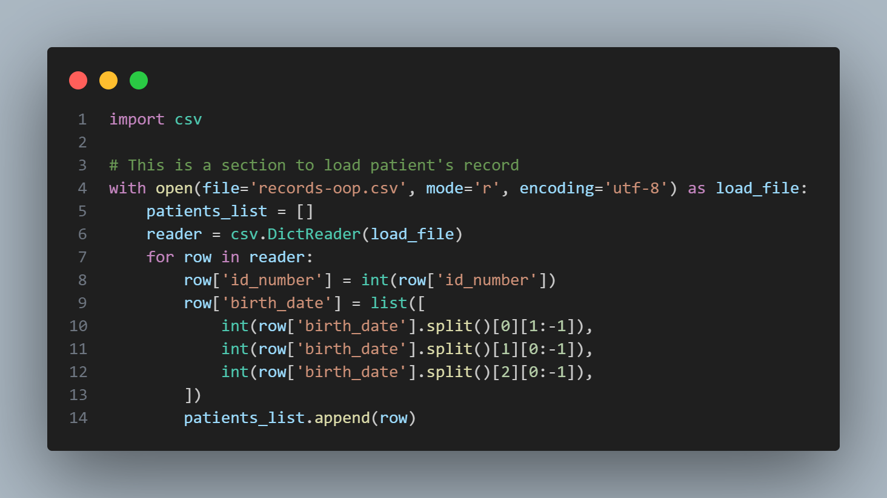
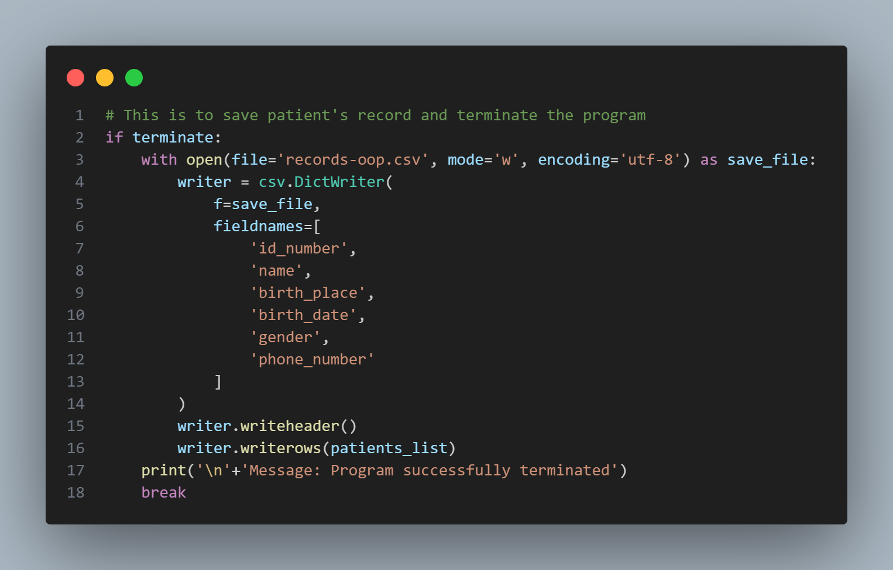
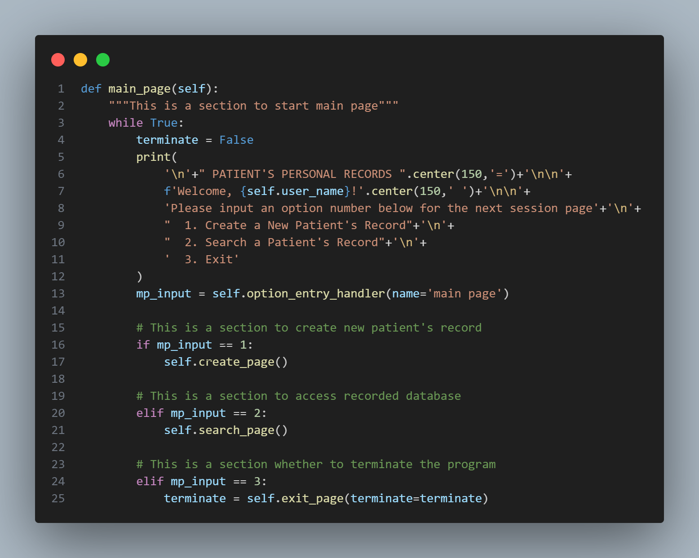
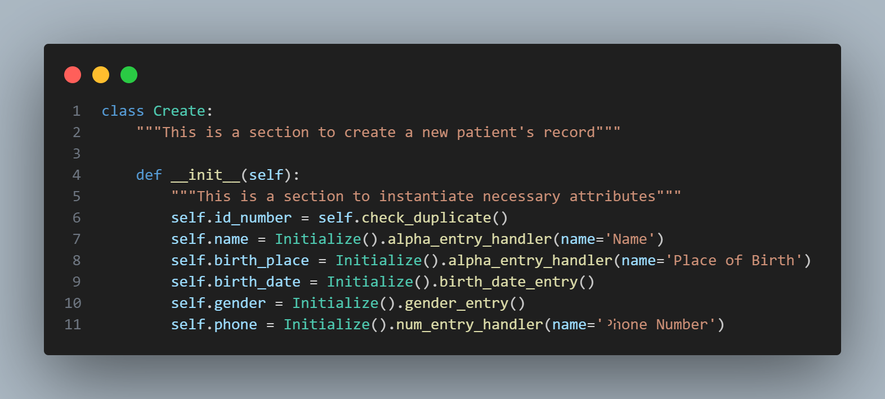
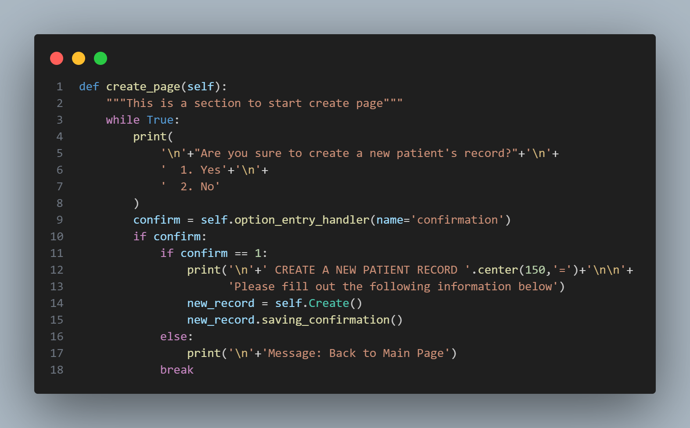
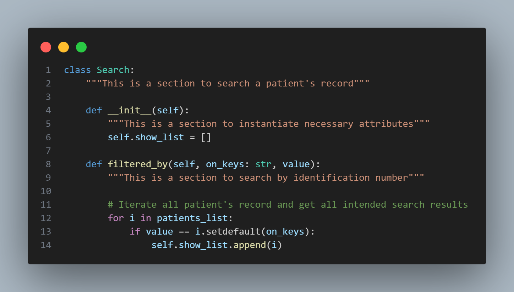
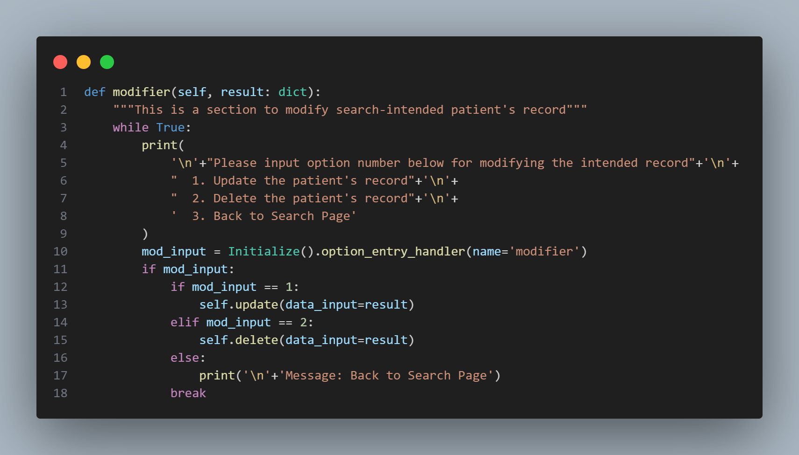
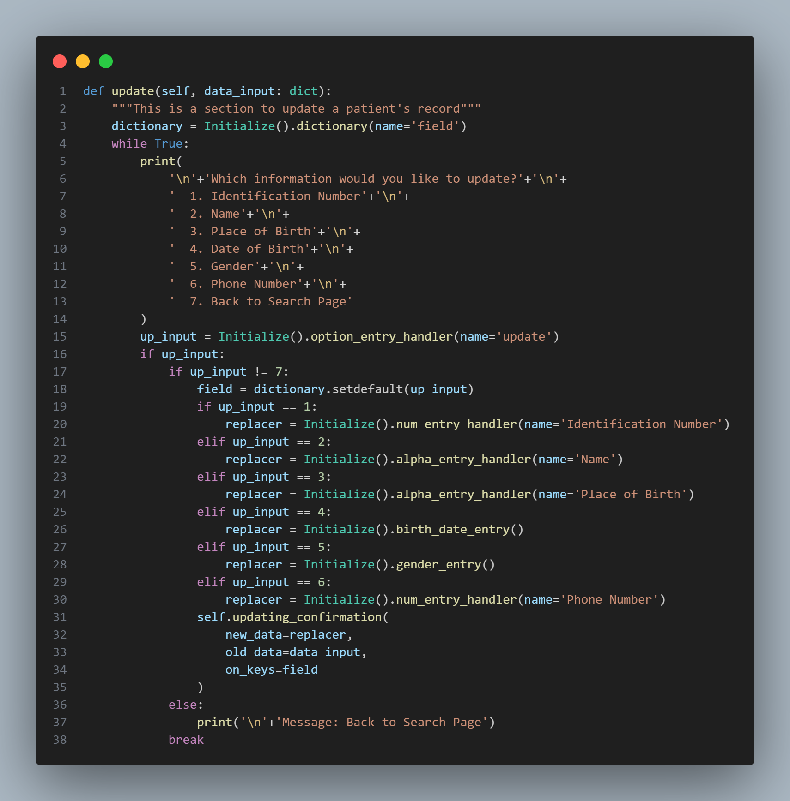
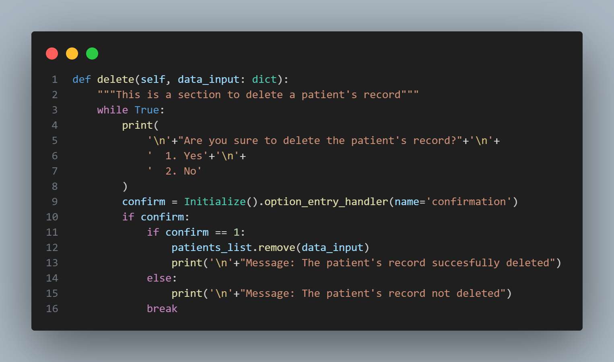

Introduction
Object-Oriented Programming (OOP) is a programming paradigm that structures code around the concept of "objects". Objects are instances of classes, which are templates or blueprints for creating objects. OOP focuses on modeling real-world entities and their interactions using classes and objects. It promotes encapsulation, inheritance, and polymorphism as core concepts.
Python is a popular programming language known for its simplicity and ease of use. One of the most common applications of Python is for creating CRUD application to a wide range of use cases. As for my project, this can be useful for managing and manipulating amounts of personal patient data by providing an easy-to-use interface which is customized to meet specific requirements or additional features such as data validation. As for the storage file format, we will be using CSV (Comma-Separated Values) which is a lightweight and accessible file format used for storing tabular data, or information presented in a table with rows and columns. Overall, this is just a small start of understanding the basic concepts of creating CRUD application in Object-oriented Programming Paradigm.
CRUD Operations
CRUD is an acronym that stands for Create, Read, Update, and Delete. It refers to the basic operations that are commonly performed on data stored in a database that provides an interface for users to interact with a database by performing these basic operations. Here's a brief description of each of the CRUD operations.
- Create: This operation is used to create new data in the database.
- Read: This operation is used to retrieve data from the database.
- Update: This operation is used to modify existing data in the database.
- Delete: This operation is used to remove data from the database.
The application may also include additional features such as authentication, authorization, validation, and error handling to ensure that data is processed correctly and securely. In summary, a CRUD application is important because it provides an efficient and scalable way to manage data, automate tasks, and customize the application to meet specific business requirements. For example, in data management, it allows users to manage data easily and efficiently. Users can create, read, update, and delete data in a database with a few clicks or taps, without having to write complex SQL queries.
This project presents an example of a personal patient record in a hospital, with a focus on the necessary patient data. The hospital name and type are not specified, but the project outlines the patient information required, including patient's identifier (ID), name, place of birth, birthdate, gender, and phone number. An ID is unique and non-repeating label that is used to identify a patient that later is used to retrieve or update the record. They are going to be represented as numbers. Here are detailed format and example of each data:
- Identifier (ID): a 16-digit numeric data type that's manually entered.
- Name: a string data type that's manually entered.
- Place of birth: a string data type that's manually entered.
- Birthdate: a string data type that's manually entered.
- Gender: a string data type that's manually entered.
- Phone Number: a numeric data type that's manually entered.
When working with CSV files, it's important to store all data as strings because CSV files do not have a standardized data type system. If data is not stored as a string, it may be interpreted as a different data type, leading to errors in data processing. By storing all data as strings, it can be parsed into a data structure and converted to the appropriate data type after reading the file. This ensures that the data is correctly interpreted and processed according to its intended data type.

When working with CSV files as a database, we use Command-Line Interface (CLI) to interact with the files instead of a graphical user interface (GUI). CLI can be used in CRUD applications and is particularly useful when efficiency, flexibility, portability, or security are important factors.
Implementing CRUD with CSV
As the program run within the terminal, first and foremost it should disclose what’s inside the current CSV file. We include the following codes at the very beginning.
Data Loading
The provided code snippet is all about loading patient records from a CSV file and processing the data to create a list of dictionaries. Let's break it down step by step:
- The "csv" module is imported, which allows us to work with CSV files.
- The code enters a "with" block, where it opens a CSV file named "records-oop.csv" in read mode ('r') with UTF-8 encoding. The "with" statement ensures proper handling of the file, automatically closing it when done.
- An empty list named "patients_list" is created. This list will store the processed patient records.
- The "csv.DictReader" is used to read the CSV file. It treats the first row as headers and each subsequent row as a dictionary with header values as keys.
- A loop iterates through each row in the CSV file (excluding the header).
- The value in the "id_number" column of the current row is converted to an integer and stored back in the same dictionary under the "id_number" key.
- The value in the "birth_date" column of the current row is processed. It's split into parts, and each part is converted to an integer to represent the year, month, and day of birth. These integers are stored as a list under the "birth_date" key in the same dictionary.
- The modified dictionary (row) is appended to the "patients_list", creating a list of patient records.
- After processing all rows, the "with" block ensures the CSV file is properly closed.
In essence, this code snippet reads patient data from a CSV file, processes the data, and stores it as a list of dictionaries. This structured data can then be used for further analysis or manipulation in a more organized manner.
Data Saving
This section of code focuses on saving patient records to a CSV file and then terminating the program. Here's an explanation of what's happening:
- "if terminate:": This condition checks whether a variable named terminate is "True". It indicates whether the program should be terminated and whether patient records should be saved.
- Inside this condition, a "with" block is used to open a CSV file named "records-oop.csv" in write mode ('w') with UTF-8 encoding for saving data.
- A "csv.DictWriter" is created. It's responsible for writing dictionaries (rows) into the CSV file. The fieldnames parameter specifies the order and names of the columns in the CSV file.
- "writer.writeheader()": This writes the header row with the column names specified in fieldnames to the CSV file.
- "writer.writerows(patients_list)": This writes the list of dictionaries (patient records) stored in the "patients_list" to the CSV file.
- After writing the data, a message is printed indicating that the program has been successfully terminated.
- "break": This statement ends the loop or program execution, essentially terminating the program after saving the patient records.
In summary, this section of code checks whether the program should be terminated. If it should be terminated, it saves the patient records to a CSV file named "records-oop.csv", prints a termination message, and then ends the program execution. This ensures that the patient records are properly saved before the program closes.
Control-Flow Procedure
A control-flow procedure manages the flow of execution based on different conditions and user interactions. It's responsible for guiding the program's behavior, directing it through different paths of code execution depending on the user's inputs or system states.
This "main_page" method handles the main menu and user interactions in a program that manages patient records:
- A "while True" loop starts to continuously display the main menu and process user inputs.
-
Inside the loop:
- "terminate" is set to "False", indicating the program is not set to terminate.
- A formatted main menu is displayed, welcoming the user and offering options to create a new patient's record, search for a patient's record, or exit the program.
- User input is obtained using "self.option_entry_handler(name='main page')", indicating a method to get a numeric option from the user.
-
Depending on the user's input ("mp_input"):
- If "mp_input" is 1, it calls the "create_page()" method, which handles the process of creating a new patient's record.
- If "mp_input" is 2, it calls the "search_page()" method for searching patient records.
- If "mp_input" is 3, it calls the "exit_page()" method with the terminate flag and updates terminate based on the method's behavior.
The loop continues indefinitely, allowing the user to navigate through the program by selecting different options from the main menu. The program will continue running and processing user choices until there's an internal mechanism that modifies the loop-breaking condition or handles program termination.
Create Operations
The "Create" operation in a CRUD application involves collecting user input, validating it, creating a new data record, storing it, and providing feedback to confirm the successful addition of the data.
Instance Creation Functionality
This code defines a class called "Create" which handles the creation of new patient records. The "__init__" method is the constructor for this class and is responsible for initializing the attributes for a new patient's record.
- "self.id_number = self.check_duplicate()": Generates a unique ID number for the patient's record. The specifics of the "check_duplicate()" method ensures the generated ID isn't already in use.
- "self.name = Initialize().alpha_entry_handler(name='Name')": Collects and handles alphanumeric input for the patient's name using the "alpha_entry_handler" method from an "Initialize" class instance.
- "self.birth_place = Initialize().alpha_entry_handler(name='Place of Birth')": Collects and handles alphanumeric input for the patient's place of birth.
- "self.birth_date = Initialize().birth_date_entry()": Collects and handles input for the patient's birth date, handling validation and formatting.
- "self.gender = Initialize().gender_entry()": Collects and handles input for the patient's gender.
- "self.phone = Initialize().num_entry_handler(name='Phone Number')": Collects and handles numeric input for the patient's phone number.
In summary, the "Create" class serves to instantiate and gather data for a new patient's record creation. It interacts with an "Initialize" class to manage various aspects of data collection and validation for patient attributes.
Create Page Management
This "create_page" method is responsible for managing the creation of a new patient's record. Here's the breakdown:
- A "while True" loop begins to manage the process of creating a new patient record.
-
Inside the loop:
- A prompt is displayed to the user, asking if they're sure they want to create a new patient's record.
- The user is provided with options to confirm or cancel.
- The "self.option_entry_handler(name='confirmation')" is used to obtain the user's choice, which handles numeric input for confirming actions.
-
If the user provided input ("confirm" is not "None"):
-
If the input is 1, indicating the user wants to proceed:
- A title banner is displayed for the new patient record creation.
- The user is prompted to fill out the required information.
- A new instance of a class "Create" is created to manage the actual process of creating the record.
- The "saving_confirmation()" method of the "new_record" instance is called, confirming the successful saving of the record.
-
If the input is not 1, indicating the user doesn't want to proceed:
- A message is displayed indicating that the program is returning to the main page.
- The "break" statement is used to exit the loop after either creating the record or canceling the process.
-
If the input is 1, indicating the user wants to proceed:
In summary, the "create_page" method guides the user through the process of creating a new patient's record. It ensures a user-friendly experience by confirming the user's intent, presenting necessary information input, and handling different outcomes based on the user's choice.
Data Interactions
Data interactions refer to how the application interacts with data throughout its lifecycle. These interactions involve performing operations like reading, updating, and deleting data records.
Instance Returning Functionality
The "Search" class is intended to search for patient records based on specific criteria. Here's the breakdown:
- The class has an "__init__" method that initializes an attribute called "show_list", which is meant to store the results of the search operation.
- The "filtered_by" method takes two arguments: "on_keys" (a string representing the attribute to search on) and "value" (the value to match).
- Inside the method, a loop iterates through each patient's record in the "patients_list".
- For each patient's record, it uses the "setdefault" method to retrieve the value associated with the specified "on_keys". If the value matches the provided value, the patient's record is considered a match.
- If a match is found, the patient's record is appended to the "show_list".
In summary, the "Search" class and its "Search" method allow for searching patient records based on a specified attribute and value. It iterates through the list of patient records, compares the attribute value to the provided value, and stores matching records in the "show_list" attribute. This class is a part of a parent-class "Initialize" for searching and displaying patient records.
Updating and Deleting Modifier
This part of the code defines a method named "modifier" within the "Search" class. Here's what it does:
- The method takes an argument "result" which is a dictionary representing the patient's record that has been searched for.
- Inside the method, a loop is started using "while True".
- The "print" statement displays a menu to the user, allowing them to choose from different options to modify the intended patient's record. The options include updating the record, deleting the record, or returning to the search page.
- The "Initialize().option_entry_handler(name='modifier')" is used to obtain the user's choice for the modification operation. This method handles numeric input for selecting menu options.
-
If the user provided input ("mod_input" is not "None"), the code checks the user's choice:
- If the choice is 1, it indicates the user wants to update the patient's record. The "self.update(data_input=result)" method is called to perform the update operation.
- If the choice is 2, it indicates the user wants to delete the patient's record. The "self.delete(data_input=result)" method is called to perform the delete operation.
- If the choice is not 1 or 2, it implies the user wants to go back to the search page.
- The "break" statement is used to exit the loop after the modification operation is completed.
In summary, the modifier method within the "Search" class is responsible for providing a menu to the user for modifying a searched patient's record. It handles updating and deleting patient records based on the user's choice and ensures a smooth user experience for making changes to patient data.
Instance Updating Functionality
This part of the code defines a method named update within the "Search" class. Here's what it does:
- The method takes an argument "data_input", which is a dictionary representing the patient's record that needs to be updated.
- A dictionary is created using "Initialize().dictionary(name='field')". This dictionary maps option numbers to field names.
- Inside the method, a loop is started using "while True".
- A menu is displayed to the user, providing options to choose which information they would like to update. The options correspond to different fields of the patient's record, such as Identification Number, Name, Place of Birth, etc.
- The "Initialize().option_entry_handler(name='update')" method is used to obtain the user's choice for the update operation. This method handles numeric input for selecting menu options.
-
If the user provided input ("up_input" is not "None"), the code checks the user's choice:
-
If the choice is not 7, it indicates the user wants to update a specific field of the patient's record:
- The "field" variable is set to the field name based on the selected option using the dictionary.
- Depending on the selected option, the appropriate data entry handler methods (like "num_entry_handler", "alpha_entry_handler", etc.) are used to obtain new data for the selected field.
- The "updating_confirmation" method is called with the new data, old data ("data_input"), and the field name to confirm and apply the update.
- If the choice is 7, it indicates the user wants to go back to the search page.
-
If the choice is not 7, it indicates the user wants to update a specific field of the patient's record:
- The "break" statement is used to exit the loop after the update operation is completed.
In summary, the update method within the "Search" class facilitates the process of updating specific fields of a patient's record. It provides a menu for the user to choose which field to update, obtains new data for the selected field, and confirms the update operation. This method ensures a user-friendly experience for modifying patient data.
Instance Deleting Functionality
This part of the code defines a method named delete within the "Search" class. Here's what it does:
- The method takes an argument "data_input", which is a dictionary representing the patient's record that the user intends to delete.
- Inside the method, a loop is started using "while True".
- A prompt is displayed to the user, asking if they're sure they want to delete the patient's record. The user is presented with options to confirm or cancel the deletion.
- The "Initialize().option_entry_handler(name='confirmation')" method is used to obtain the user's choice for the confirmation operation. This method handles numeric input for selecting menu options.
-
If the user provided input ("confirm" is not "None"), the code checks the user's choice:
- If the choice is 1, it indicates the user wants to proceed with deleting the patient's record. The "data_input" (patient's record dictionary) is removed from the "patients_list", effectively deleting the record.
- If the choice is not 1, it implies the user has chosen not to proceed with the deletion. A message indicating that the patient's record was not deleted is displayed.
- The "break" statement is used to exit the loop after the deletion operation is completed.
In summary, the delete method within the "Search" class facilitates the process of deleting a patient's record. It presents a confirmation prompt to the user, handles their choice, and deletes the record from the list of patient records if confirmed. This method ensures that the user can perform record deletions with proper confirmation and feedback.
Conclussion
In this project, we have successfully created a CRUD application using Python and CSV files as a database. This type of application is ideal for small-scale projects and is a great way to learn about the fundamentals of building CRUD applications in Python.
We have gained valuable experience in Python programming, CSV file handling, and CLI application development. We have also learned how to perform the four essential CRUD operations (Create, Read, Update, and Delete) on data stored in CSV files. While CSV files are a good starting point for managing small amounts of data, they may not be suitable for larger-scale applications. For more extensive projects, we may want to consider using a more robust database management system like MySQL or PostgreSQL.
In addition, building your own CRUD application will give you the opportunity to tailor it to your specific needs and requirements. You can experiment with different frameworks, databases, and data structures to find the best combination that works for you.
Overall, building your own CRUD application is an excellent way to challenge yourself and take your programming skills to the next level. Don't be afraid to start small and work your way up to more advanced projects. With persistence and dedication, you can achieve great things and become a proficient Python developer.
Please find detailed of this project on My Github.